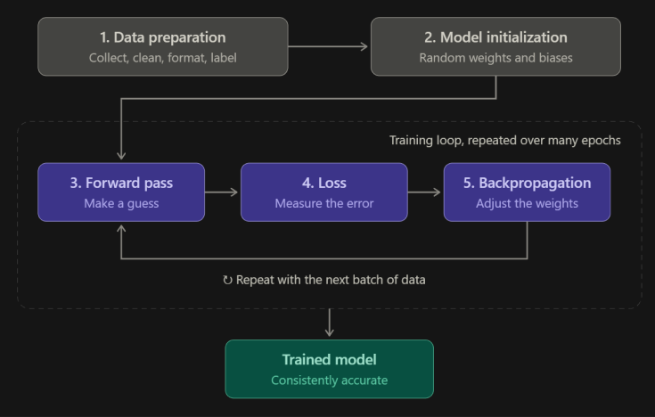
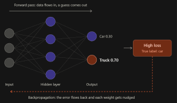

How AI Learns
Unlike traditional software, which relies entirely on hard-coded rules written by human developers, Artificial Intelligence (specifically Machine Learning and Deep Learning) discovers rules automatically by finding patterns in massive datasets.
This learning journey can be broken down into five fundamental phases:

All images from Claude AI
1. Data Collection & Preparation
An AI model is only as good as the data it absorbs. Before any learning happens, raw data (text, images, audio, or numerical logs) must be gathered, cleaned, structured, and labeled.
- Data Cleaning: Removing duplicates, handling missing fields, and fixing errors.
- Feature Engineering & Formatting: Transforming raw data into a numerical format that mathematical algorithms can interpret.
- Sources to Cite:
- Source: Domino Data Lab – What Is Machine Learning Model Training?
- Source: Medium (Amit Kharche) – The 7 Stages of Machine Learning
2. Model Initialization & Architecture Selection
Developers select a model architecture based on the problem they want to solve (e.g., Convolutional Neural Networks for computer vision, or Transformers for language tasks).
- When the model is first initialized, its internal mathematical parameters—known as weights and biases—are set to random values. At this stage, the AI knows nothing and will output completely random, incorrect guesses.
- Sources to Cite:
- Source: Google Cloud Learning Hub – What is a Neural Network & How Does It Work?
- Source: NVIDIA Developer Documentation – Artificial Neural Network Overview
3. Forward Propagation (Making a Guess)
During training, data is fed into the model in batches. The input data passes through layers of artificial "neurons," where it is multiplied by the current weights, added to biases, and passed through an activation function.
- The model evaluates the input and makes a prediction (e.g., guessing whether an image contains a car or a truck).
- Sources to Cite:
- Source: InvGate Support Assist – What is a Neural Network (and How Does it Train Itself)?
- Source: Snowflake ML Guide – ML Model Training: How Optimization Works

4. Loss Calculation (Measuring the Error)
To know how wrong its guess was, the system uses a loss function (or cost function). This is a mathematical formula that compares the model's prediction against the actual ground-truth label.
- If the model predicts a cat is a dog, the loss function registers a high error score. The ultimate goal of training is to drive this loss value as close to zero as possible.
- Sources to Cite:
- Source: Snowflake ML Guide – ML Model Training: How Optimization Works
- Source: Domino Data Lab – What Is Machine Learning Model Training?
5. Backpropagation & Optimization (Adjusting and Learning)
This is where the actual "learning" happens. Using a technique called backpropagation, the error is sent backward through the neural network to determine how much each individual weight contributed to the mistake.
- An optimizer (such as Gradient Descent) then tweaks the weights and biases slightly to correct the error.
- The model repeats steps 3 through 5 across millions or billions of data examples over multiple iterations (epochs) until its predictions become consistently accurate.
- Sources to Cite:
- Source: Google Cloud Learning Hub – What is a Neural Network & How Does It Work?
- Source: History of Data Science – Artificial Neural Networks: Deeper Learning